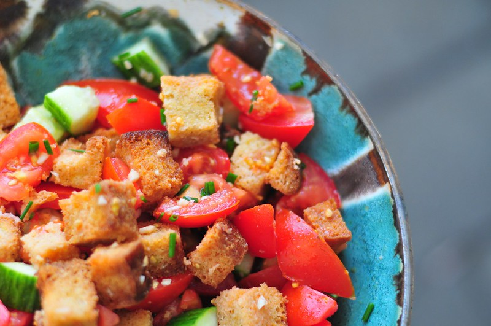

Panzanella

Description:
A salad made with tomatoes, cucumbers, and bread with dressing made from olive oil, lime juice and jalapneos.
Adapted from Leanne Brown's Good and Cheap
Ingredients
- 2 small field cucumbers or 1 English cucumber, chopped
- 2 medium tomatoes, chopped
- 4 slices of bread
- Salt and pepper
Dressing
- 1 jalapeno, finely chopped
- 2 tbsp tomato, chopped
- 1 lime, juiced
- 2 tbsp olive oil
- Salt and pepper
Optional additions
- fresh herbs
- peaches, nectarines, or plums
- red onion, finely chopped
- Zucchini or summer squash
- Olives
- Grapes
Instructions
- If using field cucumbers, peel the skin off since it's tough.
- Chop tomatoes, keep 2 tablespoons of the chopped tomatoes for the dressing.
- Put the cucumbers and the remaining tomatoes into a large bowl. Sprinkle salt and pepper, then toss the vegetables.
- Get a saucepan, put a few drops of olive oil in, then place the saucepan on medium heat.
- Saute the jalapeno for 1 minute.
- Add in the two tablespoons of tomato set aside for the dressing as well as a tablespoon of water.
- Cook for 2 minutes until the tomatoes' juices release. Sprinkle with salt and pepper
- After the water evaporates, turn the stovetop off then pour the jalapeno-tomato mixture onto the cutting board.
- Chop the mixture finely, then toss back into the pan. Do not put the heat back on.
- Put in lime juice and olive oil into the pan. Add salt and pepper as needed.
- If the bread is day-old or hard, chop or tear into bite size pieces. Alternatively, toast the bread then tear them up afterwards.
- Mix bread and vegetables with the dressing. Apply salt and pepper as needed.
- Let the bread soak up the dressing and juices. Afterwads, serve.